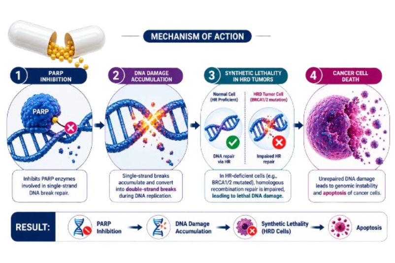

AstraZeneca
Lynparza (olaparib) is an oral PARP inhibitor that blocks PARP-mediated DNA repair. It is used in selected patients with homologous recombination repair (HRR) gene-mutated metastatic castration-resistant prostate cancer (mCRPC), including BRCA-mutated disease.
Lynparza
Olaparib
PARP Inhibitor
Oral
AstraZeneca
Olaparib inhibits poly (ADP-ribose) polymerase enzymes, including PARP1 and PARP2, which play important roles in DNA damage repair. PARP inhibition increases DNA damage and can lead to cancer cell death, particularly in tumors with homologous recombination repair deficiencies such as BRCA1 or BRCA2 mutations.

| Trial | Setting | Outcome |
|---|---|---|
| PROfound | HRR-mutated mCRPC | Improved Radiographic PFS vs Enzalutamide or Abiraterone |
| PROpel | mCRPC | Improved Radiographic PFS with Olaparib + Abiraterone |
| PROfound Cohort A | BRCA1/2 or ATM-mutated mCRPC | Improved rPFS with Olaparib |
Recommended dose: 300 mg orally twice daily, with or without food.
| Recommended Dose | 300 mg Twice Daily |
|---|---|
| Route | Oral |
| Schedule | Continuous Treatment |
| Administration | With or Without Food |